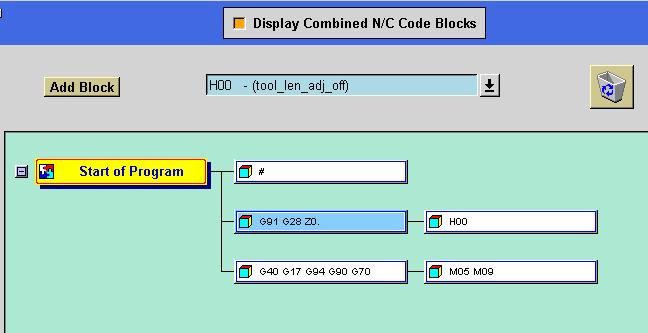
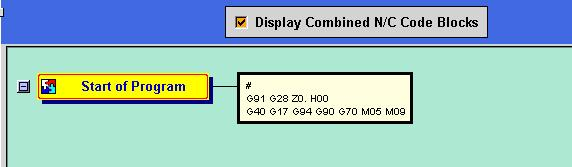
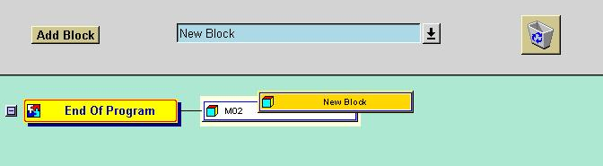
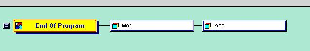
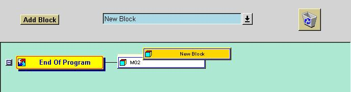
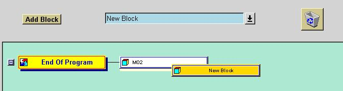
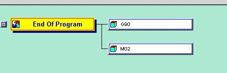
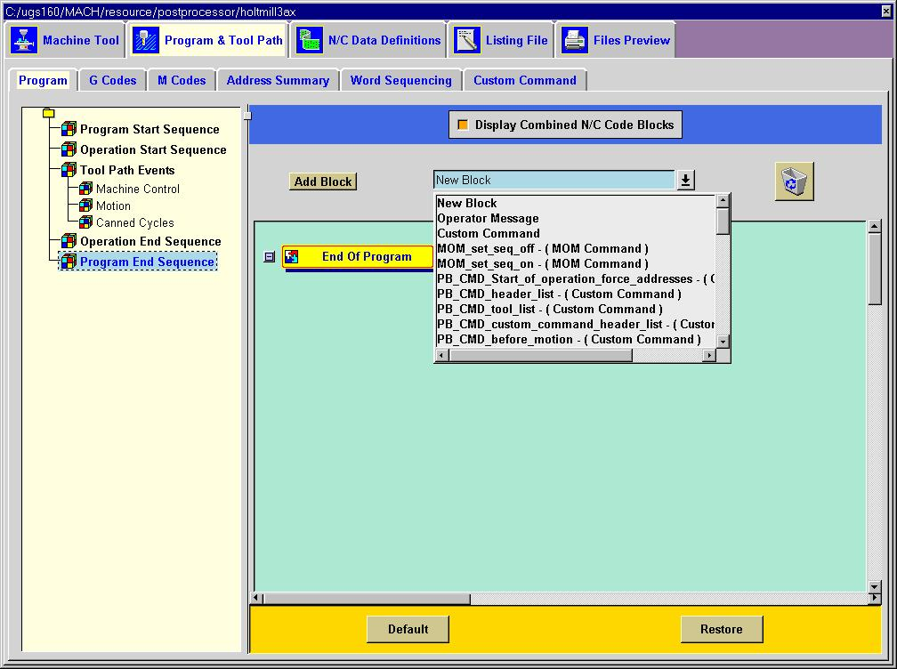
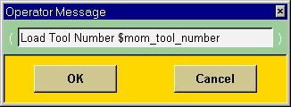

The Program and Tool Path tab has options that allows you to determine the NC output for specific events and commands that are generated by the Unigraphics Event Generator. The tabs under this option control the content, format and order of output for your NC Code.
In each sequence dialog there are markers. These are the yellow boxes located in the left column of the screen. The markers represent events that occur in the tool path. When events occur in the tool path while post processing, you can then determine the NC blocks that are to be output. The markers are fixed and cannot be changed. The plus or minus sign to the left of the yellow marker can be toggled to display the blocks attached it.
The information in the sequences can be displayed in two different modes, combined mode and uncombined mode.

The Display Combined N/C Code Blocks is toggled off. In this mode the information is displayed in the uncombined mode.

The Display Combined N/C Code Blocks is toggled on. In this mode the blocks are displayed as they will be output in the combined mode. You can use this mode to get an idea of the combining of the blocks will be done.
Each of the sequence dialogs have the same basic options. In a sequence dialog you can add, copy or delete blocks. To add a block, you need to first select the block you wish to add to a particular marker. You can do this from this block selection pull down dialog.
Once you have selected the block you wish to add, depress and hold the
left mouse button on the Add Block
button and drag the block to the desired marker. You
now have the option now of placing your new block before, with or after
any existing block that is already being output with that marker.
Continue to hold down the mouse button until the existing block is highlighted.
The highlight will appear either above, below or completely around the
existing block. To place the new block before an existing block release
the mouse when the highlight appears above the existing block. To
place the new block after an existing block release the mouse when the
highlight appears below the existing block. To place the new
block with an existing block release the mouse when the highlight appears
around the existing block. If there are no existing blocks being
output with the desired marker, then drag the new block until the highlight
appears to the right of the marker and the release the mouse button.


With the entire existing block highlighted, the new block is placed
on the same line as the existing block.

With the highlight appearing above the existing block, the new block
will be listed on a line above the existing block.


With the highlight appearing below the existing block, the new block will be listed on a line below the existing block.
To remove an existing block from a marker, you can either right click on the block and select delete or drag the block to trash can.
You can also copy a block or blocks and paste them with another marker in the same sequence. This is very useful, for instance, to make the first and auto tool change events both output the same code. To copy a single block, right click the right mouse button and select Copy As. You now can make a copy of the blocks using the Reference Block option or use the New Block option to create completely new blocks. The New Block option will allow you to edit the new blocks without changing the original blocks. The Reference Block option means that only one copy of the blocks exists and any changes will apply to both. You can place the block using the same techniques as the Add Block option. You can also copy all the blocks associated with a marker by right clicking on the marker itself. Now you can place all the blocks with another marker.
New Block
This option allows you to create a new block by adding word addresses
and text. Refer to the chapter on Creating
a New Block for a detailed description.

Operator Message
This option allows you to create a block that will be specifically
created to output an operator message. A dialog will be presented
to allow you to enter the message text. The system will automatically
place the message start string and the message end string before
and after your text. Your text can contain any valid mom
variable as well as text. In the following example the variable
$mom_tool_number will be replaced by the current tool number when the post
processor is used. Note you must make sure that the variable exists
and is defined at the time of operation or a run-time error will occur.
See the online UG/Post documentation for a complete list of variables that
may be used.

See the section on Operator Message for information for defining the message start and end characters.
MOM_command
You can select from the list of blocks, blocks that were created to
perform specific functions. For example, MOM_set_seq_off, will turn
off all sequence number output. These blocks can be placed within
any sequence to perform their pre-defined function. For a complete
list of MOM_commands that can be used, see the online UG/Post documentation.
Custom Command
This option allows you to insert your own TCL procedure into your post
processor. After you have placed the block with the marker, a dialog
will appear to allow you to enter you custom TCL procedure. See the
section on Custom Commands for more details.
Existing Block
You can use a block that already exists. This could be a block
that was default with the system or is being output with another marker
or event. All the blocks in your current post can be selected.